13 Dimension reduction
13.1 Learning Objectives
- Explain the aims and motivation behind Principal Component Analysis (PCA) and its relevance in biology
- Write
Rcode to carry out PCA - Interpret principal component scores and describe a subject with a high or low score
- Interpret
Routput from PCA - Interpret and communicate, to both a statistical and non-statistical audience, dimaension reduction techniques
13.2 Dimension reduction
Reduction of dimensions is needed when there are far too many features in a dataset, making it hard to distinguish between the important ones that are relevant to the output and the redundant or not-so important ones. Reducing the dimensions of data is called dimensionality reduction.
So the aim is to find the best low-dimensional representation of the variation in a multivariate (lots and lots of variables) data set, but how do we do this?
One way is termed Principal Component Analysis (PCA). PCA is a feature extraction method that reduces the dimensionality of the data (number of variables) by creating new uncorrelated variables while minimizing loss of information on the original variables.
Think of a baguette. The baguette pictured here represents two data dimensions: 1) the length of the bread and 2) the height of the bread (we'll ignore depth of bread for now). Think of the baguette as your data; when we carry out PCA we're rotating our original axes (x- and y-coordinates) to capture as much of the variation in our data as possible. This results in new uncorrelated variables that each explain a % of variation in our data; the procedure is designed so that the first new variable (PC1) explains the most, the second (PC2) the second most and so on.

Now rather than a baguette think of data; the baguette above represent the shape of the scatter between the two variables plotted below. The rotating grey axes represent the PCA procedure, essentially searching for the best rotation of the original axes to represent the variation in the data as best it can. Mathematically the Euclidean distance (e.g., the distance between points \(p\) and \(q\) in Euclidean space, \(\sqrt{(p-q)^2}\)) between the points and the rotating axes is being minimized (i.e., the shortest possible across all points), see the blue lines. Once this distance is minimized across all points we "settle" on our new axes (the black tiled axes).

Luckily we can do this all in R!
13.3 PCA in R
13.3.1 Using the palmerpenguins data
## getting rid of NAs
penguins_nafree <- penguins %>% drop_na()When carrying out PCA we're only interested in numeric variables, so let's just plot those. We can use the piping operator %>% to do this with out creating a new data frame
library(GGally)
penguins_nafree %>%
dplyr::select(species, where(is.numeric)) %>%
ggpairs(aes(color = species),
columns = c("flipper_length_mm", "body_mass_g",
"bill_length_mm", "bill_depth_mm")) 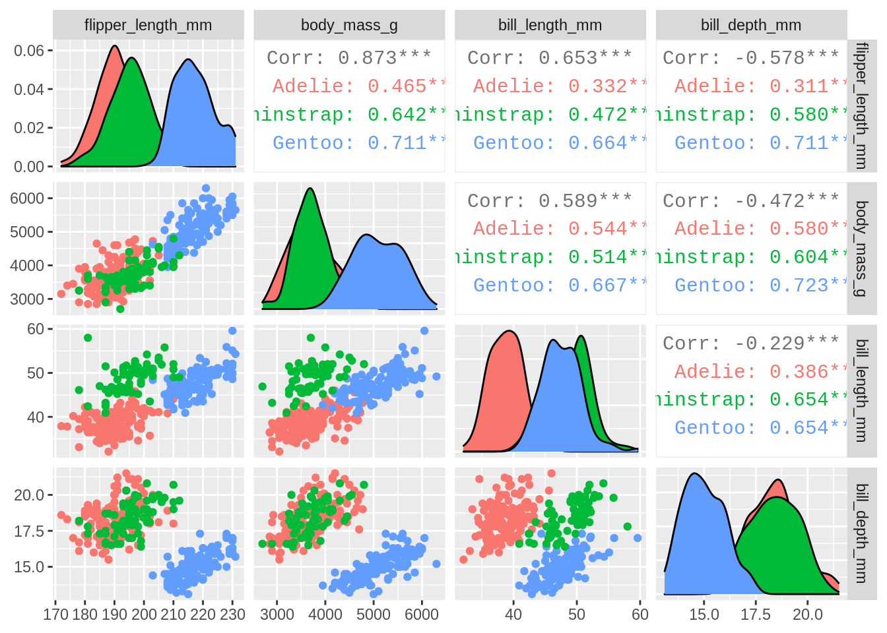
Using prcomp()
There are three basic types of information we obtain from Principal Component Analysis:
PC scores: the coordinates of our samples on the new PC axis: the new uncorrelated variables (stored in
pca$x)Eigenvalues: (see above) represent the variance explained by each PC; we can use these to calculate the proportion of variance in the original data that each axis explains
Variable loadings (eigenvectors): these reflect the weight that each variable has on a particular PC and can be thought of as the correlation between the PC and the original variable
Before we carry out PCA we should scale out data. WHY?
pca <- penguins_nafree %>%
dplyr::select(where(is.numeric), -year) %>% ## year makes no sense here so we remove it and keep the other numeric variables
scale() %>% ## scale the variables
prcomp()
## print out a summary
summary(pca)## Importance of components:
## PC1 PC2 PC3 PC4
## Standard deviation 1.6569 0.8821 0.60716 0.32846
## Proportion of Variance 0.6863 0.1945 0.09216 0.02697
## Cumulative Proportion 0.6863 0.8809 0.97303 1.00000This output tells us that we obtain 4 principal components, which are called PC1 PC2, PC3, and PC4 (this is as expected because we used the 4 original numeric variables!). Each of these PCs explains a percentage of the total variation (Proportion of Variance) in the dataset:
PC1explains \(\sim\) 68% of the total variance, which means that just over half of the information in the dataset (5 variables) can be encapsulated by just that one Principal Component.PC2explains \(\sim\) 19% of the variance.PC3explains \(\sim\) 9% of the variance.PC4explains \(\sim\) 2% of the variance.
From the Cumulative Proportion row we see that by knowing the position of a sample in relation to just PC1 and PC2 we can get a pretty accurate view on where it stands in relation to other samples, as just PC1 and PC2 explain 88% of the variance.
The loadings (relationship) between the initial variables and the principal components are stored in pca$rotation:
pca$rotation## PC1 PC2 PC3 PC4
## bill_length_mm 0.4537532 -0.60019490 -0.6424951 0.1451695
## bill_depth_mm -0.3990472 -0.79616951 0.4258004 -0.1599044
## flipper_length_mm 0.5768250 -0.00578817 0.2360952 -0.7819837
## body_mass_g 0.5496747 -0.07646366 0.5917374 0.5846861Here we can see that bill_length_mm has a strong positive relationship with PC1, whereas bill_depth_mm has a strong negative relationship. Both fliper_length_mm and body_mass_g also have a strong positive relationship with PC1.
Plotting this we get
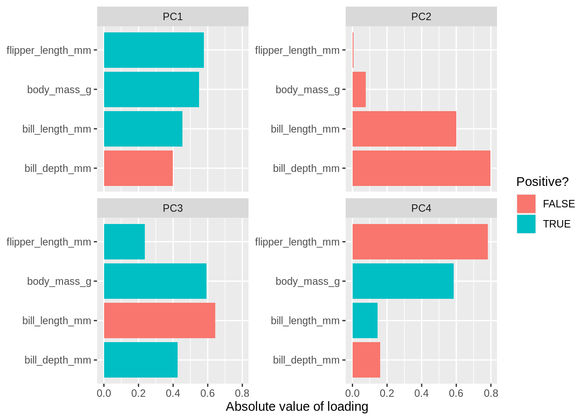
The new variables (PCs) are stored in pca$x, lets plot some of them alongside the loadings using a biplot. For PC1 vs PC2:
library(factoextra) ## install this package first
fviz_pca_biplot(pca, geom = "point") +
geom_point (alpha = 0.2)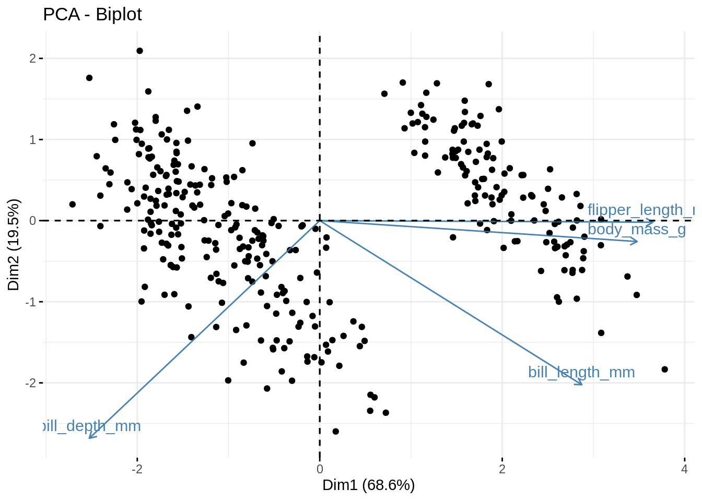
Now for PC2 vs PC3
fviz_pca_biplot(pca, axes = c(2,3),geom = "point") +
geom_point (alpha = 0.2)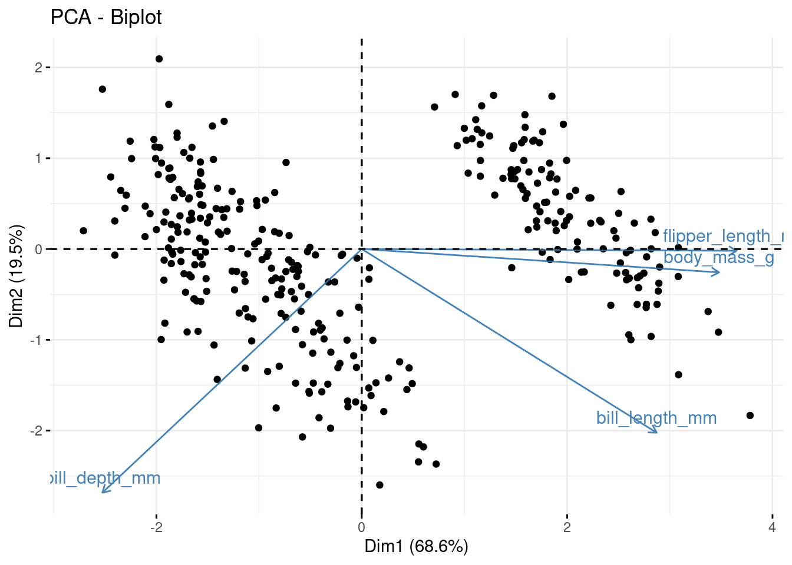
But how many PCs (new variables) do we keep? The whole point of this exercise is to reduce the number of variables we need to explain the variation in our data. So how many of these new variables (PCs) do we keep?
To assess this we can use the information printed above alongside a screeplot:
fviz_screeplot(pca)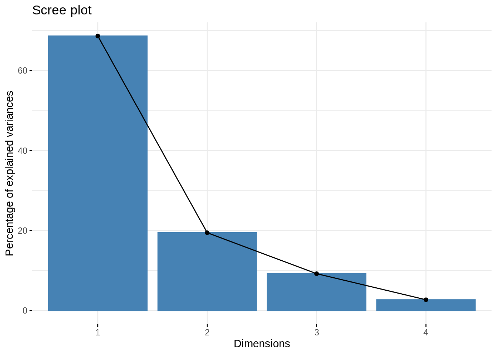
Principal components from the original variables
Recall that the principal components are a linear combination of the (statndardised) variables. So for PC1
loadings1 <- pca$rotation[,1]
loadings1## bill_length_mm bill_depth_mm flipper_length_mm body_mass_g
## 0.4537532 -0.3990472 0.5768250 0.5496747Therefore, the first Principle Component will be \(0.454\times Z1 -0.399 \times Z2 + 0.5768 \times Z3 + 0.5497 \times Z3\) where \(Z1\), \(Z2\), \(Z3\). and \(Z4\) are the scaled numerical variables form the penguins dataset (i.e., bill_length_mm, bill_depth_mm, flipper_length_mm, body_mass_g). To compute this we use R:
scaled_vars <- penguins_nafree %>%
dplyr::select(where(is.numeric), -year) %>%
scale() %>%
as_tibble()
## By "Hand"
by_hand <- loadings1[1]*scaled_vars$"bill_length_mm" +
loadings1[2]*scaled_vars$"bill_depth_mm" +
loadings1[3]*scaled_vars$"flipper_length_mm" +
loadings1[4]*scaled_vars$"body_mass_g"
## From PCA
pc1 <- pca$x[,1]
plot(by_hand,pc1)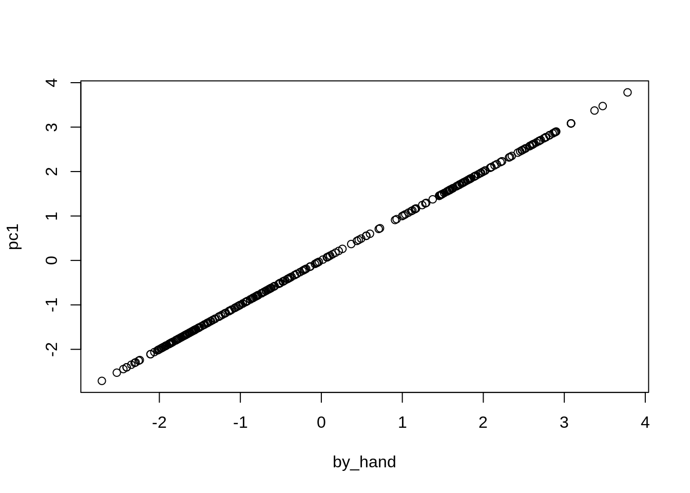
13.3.2 Athletes
You'll find the athletes.csv file on CANVAS.
athletes <- read_csv("athletes.csv")athletes## # A tibble: 33 x 10
## m100 long weight highj m400 m110 disc pole javel m1500
## <dbl> <dbl> <dbl> <dbl> <dbl> <dbl> <dbl> <dbl> <dbl> <dbl>
## 1 11.2 7.43 15.5 2.27 48.9 15.1 49.3 4.7 61.3 269.
## 2 10.9 7.45 15.0 1.97 47.7 14.5 44.4 5.1 61.8 273.
## 3 11.2 7.44 14.2 1.97 48.3 14.8 43.7 5.2 64.2 263.
## 4 10.6 7.38 15.0 2.03 49.1 14.7 44.8 4.9 64.0 285.
## 5 11.0 7.43 12.9 1.97 47.4 14.4 41.2 5.2 57.5 257.
## 6 10.8 7.72 13.6 2.12 48.3 14.2 43.1 4.9 52.2 274.
## 7 11.2 7.05 14.1 2.06 49.3 14.4 41.7 5.7 61.6 291.
## 8 11.0 6.95 15.3 2 48.2 14.4 41.3 4.8 63 266.
## 9 11.2 7.12 14.5 2.03 49.2 14.7 42.4 4.9 66.5 270.
## 10 11.2 7.28 15.2 1.97 48.6 14.8 48.0 5.2 59.5 292.
## # … with 23 more rowsathletes %>%
ggpairs()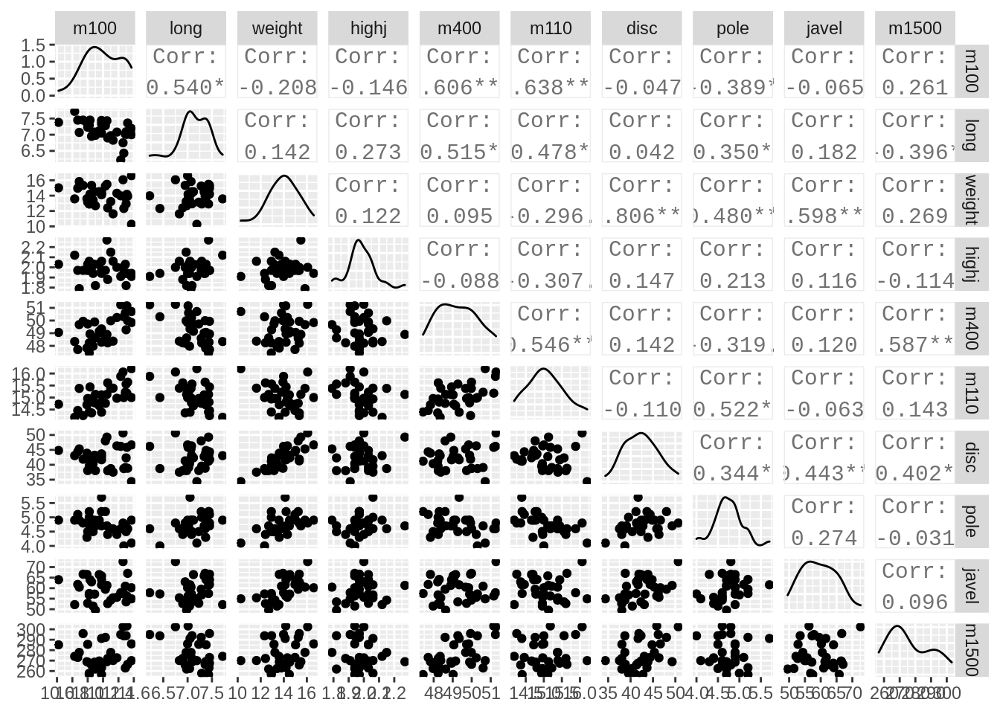
corrplot::corrplot(cor(athletes), method = "ellipse", type = "upper")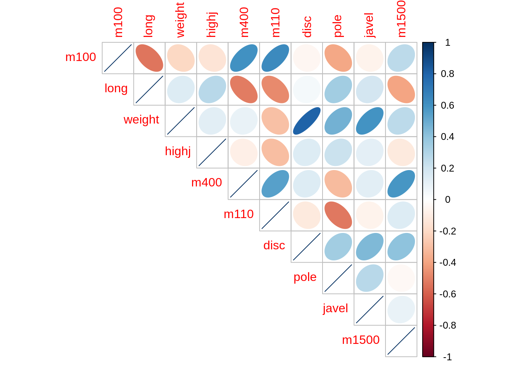
pca <- athletes %>%
scale() %>%
prcomp()
summary(pca)## Importance of components:
## PC1 PC2 PC3 PC4 PC5 PC6 PC7
## Standard deviation 1.8488 1.6144 0.97123 0.9370 0.74607 0.70088 0.65620
## Proportion of Variance 0.3418 0.2606 0.09433 0.0878 0.05566 0.04912 0.04306
## Cumulative Proportion 0.3418 0.6025 0.69679 0.7846 0.84026 0.88938 0.93244
## PC8 PC9 PC10
## Standard deviation 0.55389 0.51667 0.31915
## Proportion of Variance 0.03068 0.02669 0.01019
## Cumulative Proportion 0.96312 0.98981 1.00000## standard deviations of newly rotated variables
pca$sdev## [1] 1.8488478 1.6144328 0.9712345 0.9370279 0.7460742 0.7008762 0.6561975
## [8] 0.5538936 0.5166715 0.3191460## p = 10 variables
sum(pca$sdev^2)## [1] 10screeplot
## screeplot of sdev^2
fviz_screeplot(pca, choice = "eigenvalue") +
geom_hline(yintercept = 1)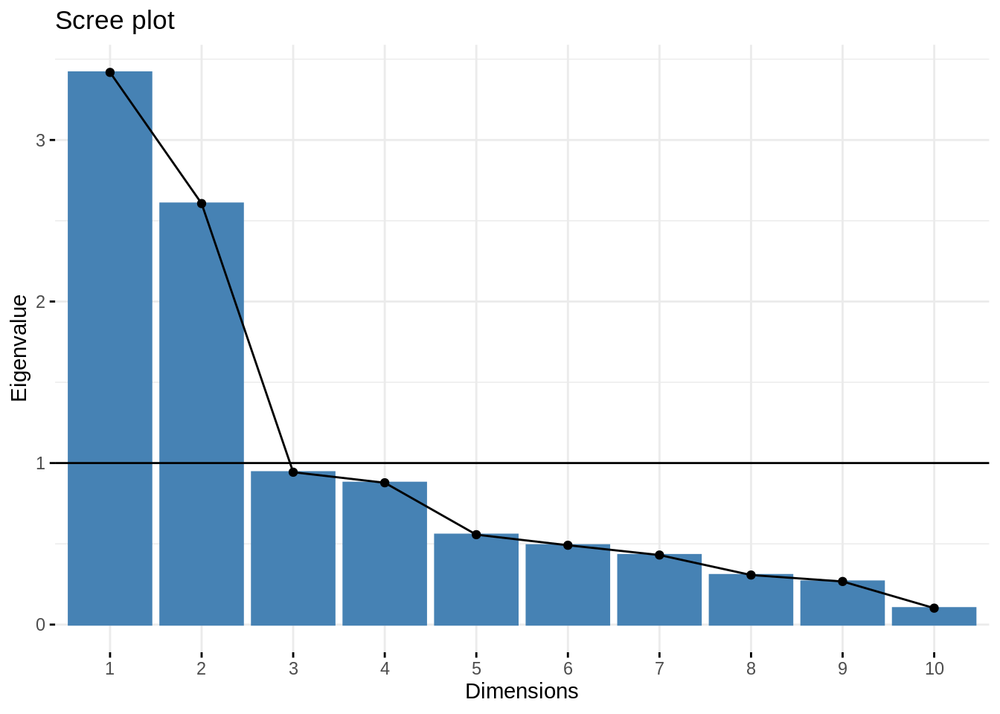
biplots
fviz_pca_biplot(pca,geom = "point") +
geom_point (alpha = 0.2)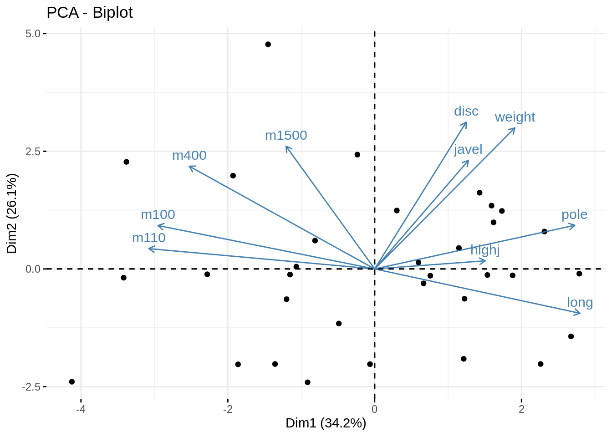
- discus, shot, & javelin more strongly correlated with one another
- running events more strongly correlated to one another
- could think of PC1 as a fieldness variable (i.e., strong +ve loadings from field events and -ve loadings from track events)
Finding correlation between a PC and the original variable:
pca$rotation %*% diag(pca$sdev)## [,1] [,2] [,3] [,4] [,5] [,6]
## m100 -0.7689031 0.24024073 -0.25977801 0.08276995 -0.329999387 0.02152557
## long 0.7285412 -0.24552536 -0.16408953 0.22886871 0.275237129 -0.06572987
## weight 0.4975355 0.78063857 0.09569838 0.10097671 -0.007277715 0.16121594
## highj 0.3924767 0.04504025 -0.83039242 -0.36351428 -0.001399867 0.05224598
## m400 -0.6579077 0.56853834 -0.18404546 -0.07550062 0.109647051 -0.22913668
## m110 -0.8014415 0.11231318 -0.12253105 0.35821666 -0.066253470 0.14752835
## disc 0.3250132 0.81260004 0.04477360 -0.02397295 0.014442957 0.43097750
## pole 0.7101094 0.24149011 0.13293514 -0.13489967 -0.534743786 -0.24373698
## javel 0.3326883 0.60049956 -0.18679561 0.56265307 0.071311293 -0.30659402
## m1500 -0.3145678 0.67962013 0.21615050 -0.45506038 0.253495250 -0.21049009
## [,7] [,8] [,9] [,10]
## m100 0.16693567 -0.367626287 0.056004765 -0.03494024
## long 0.49249877 -0.078245304 -0.023838755 -0.01780972
## weight -0.07261722 -0.040160366 -0.218281354 -0.20767995
## highj -0.08866817 0.086094934 0.052734102 -0.03810980
## m400 0.09274620 0.081333350 -0.336230314 0.10749282
## m110 0.17883327 0.353939993 0.107074242 -0.08288795
## disc 0.09447447 -0.005206846 0.086408421 0.17058453
## pole 0.17931681 0.153358210 0.009126707 0.02103035
## javel -0.22436043 -0.032413502 0.158202825 0.04178638
## m1500 0.12262390 -0.004048987 0.236058037 -0.0775902813.3.3 Ants (from previous chapter)
ants <- read_csv("pitfalls.csv")## choose numeric variables only and transform
ants_numeric <- ants %>%
dplyr::select(where(is.numeric), -Month) %>%
mutate(
Nyl = log(Nyl + 1),
Phe = log(Phe + 1),
Tet = log(Tet + 1),
Pac = log(Pac + 1))
corrplot::corrplot(cor(ants_numeric), method = "ellipse",type = "upper")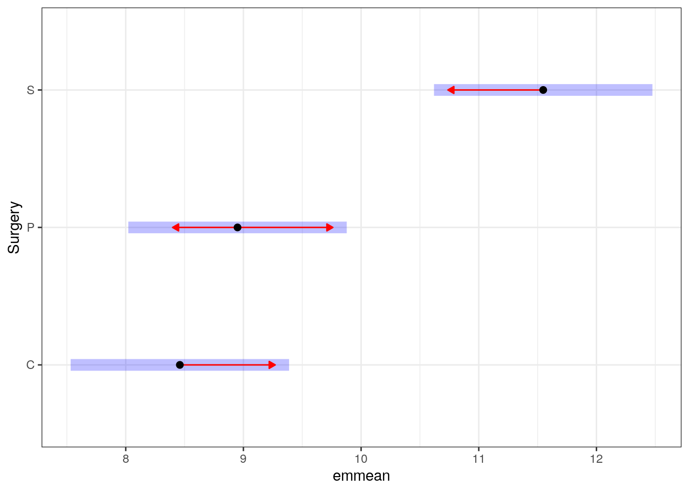
pca <- ants_numeric %>%
scale() %>%
prcomp()
summary(pca)## Importance of components:
## PC1 PC2 PC3 PC4
## Standard deviation 1.5517 0.8361 0.7611 0.56041
## Proportion of Variance 0.6019 0.1747 0.1448 0.07852
## Cumulative Proportion 0.6019 0.7767 0.9215 1.00000## screeplot of sdev^2
fviz_screeplot(pca, choice = "eigenvalue") +
geom_hline(yintercept = 1)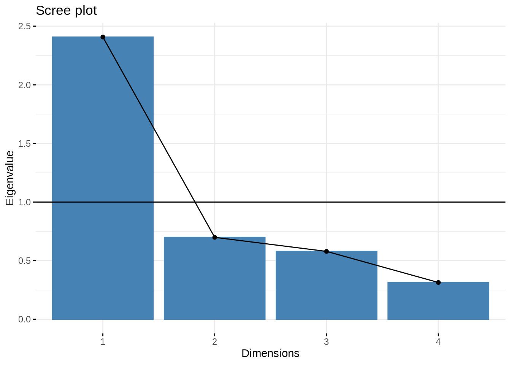
## reduced space plot (biplot)
fviz_pca_biplot(pca,geom = "point") +
geom_point (alpha = 0.2)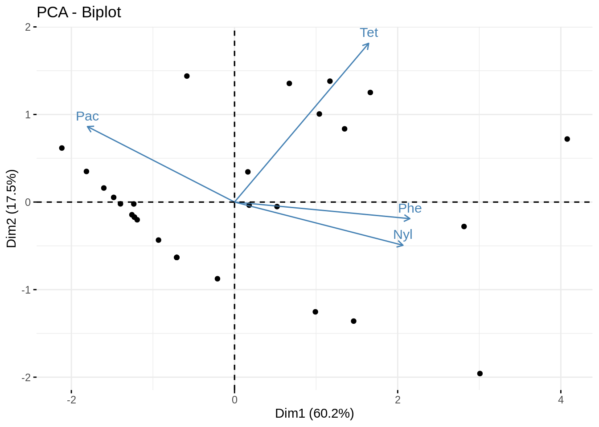
PheandNylstrongly positively correlated- PC2 has a large contribution from
Tet
Additional information
fviz_pca_biplot(pca,geom = "point",alpha = 0.2) +
geom_point(aes(color = ants$Location)) +
labs(color = "Location")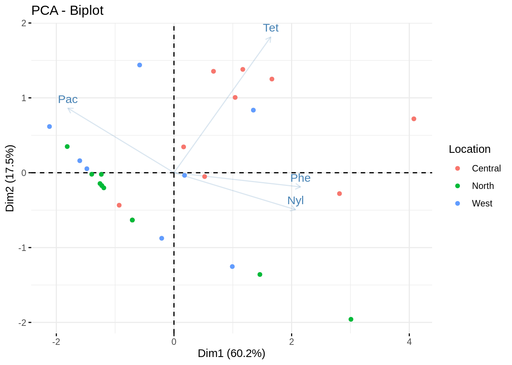
- Central different from North and West?
fviz_pca_biplot(pca,geom = "point",alpha = 0.2) +
geom_point(aes(color = ants$Habitat)) +
labs(color = "Habitat")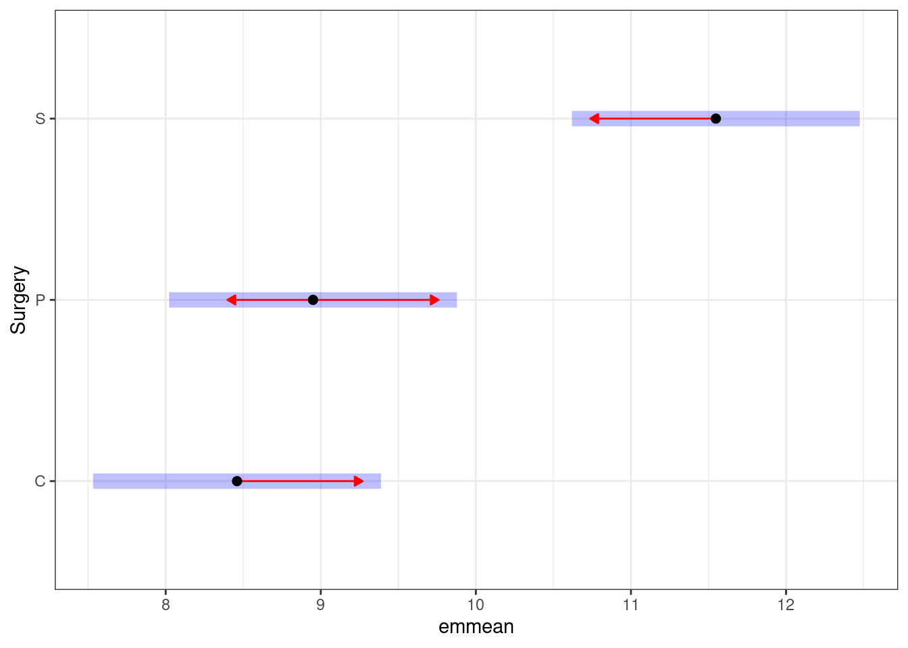
- Grass and Scrub intermediate?
13.4 Reality check: reducing noise...
set.seed(1234) ## just for reproduciblity
noise <- as_tibble(replicate(10,rnorm(200, mean = 50, sd = 10)))
noise## # A tibble: 200 x 10
## V1 V2 V3 V4 V5 V6 V7 V8 V9 V10
## <dbl> <dbl> <dbl> <dbl> <dbl> <dbl> <dbl> <dbl> <dbl> <dbl>
## 1 37.9 54.9 37.7 53.1 39.8 37.9 36.0 29.9 47.5 44.7
## 2 52.8 57.0 50.4 56.1 36.1 53.0 73.8 34.4 37.8 45.0
## 3 60.8 51.9 45.8 33.1 49.5 34.6 58.7 69.6 49.3 38.5
## 4 26.5 57.0 41.0 57.8 68.1 56.4 34.6 48.2 63.6 51.3
## 5 54.3 53.1 54.2 50.1 49.0 57.0 61.3 63.6 45.4 54.7
## 6 55.1 57.6 51.5 48.2 57.8 30.9 60.4 66.5 50.7 48.1
## 7 44.3 68.4 64.6 61.1 39.0 59.4 55.9 51.2 57.8 33.8
## 8 44.5 61.1 38.8 64.8 47.8 47.8 54.0 50.0 34.1 46.0
## 9 44.4 50.3 44.8 38.5 55.7 43.3 51.4 52.0 36.3 54.1
## 10 41.1 38.9 49.3 60.1 46.5 54.5 56.2 56.8 40.7 42.8
## # … with 190 more rowscorrplot::corrplot(cor(noise), method = "ellipse",type = "upper")
pca <- noise %>%
scale() %>%
prcomp()
summary(pca)## Importance of components:
## PC1 PC2 PC3 PC4 PC5 PC6 PC7
## Standard deviation 1.1890 1.1331 1.0936 1.0281 1.0075 0.96654 0.94742
## Proportion of Variance 0.1414 0.1284 0.1196 0.1057 0.1015 0.09342 0.08976
## Cumulative Proportion 0.1414 0.2698 0.3894 0.4951 0.5966 0.68998 0.77974
## PC8 PC9 PC10
## Standard deviation 0.90017 0.85665 0.81141
## Proportion of Variance 0.08103 0.07339 0.06584
## Cumulative Proportion 0.86078 0.93416 1.00000fviz_screeplot(pca, choice = "eigenvalue") +
geom_hline(yintercept = 1)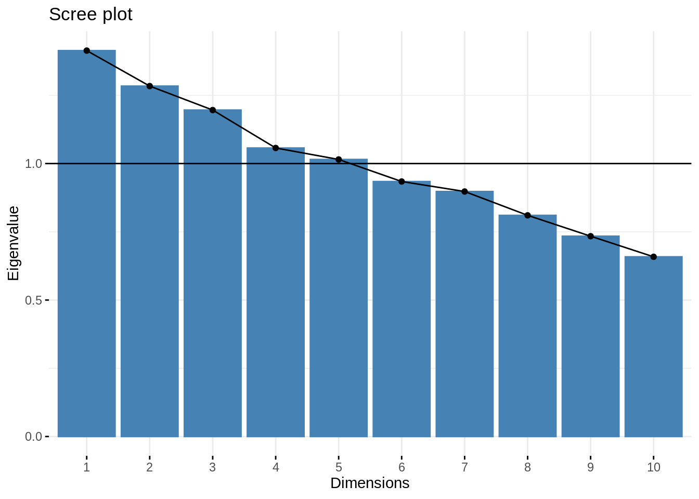
13.5 Other resources: optional but recommended
'explor' is an R package to allow interactive exploration of multivariate analysis results
The Mathematics Behind Principal Component Analysis (6 min read)
13.5.1 Multidimensional Scaling in R
Multidimensional scaling (MDS) is actually the more general technique of dimension reduction. PCA is a special case of MDS!
To carry out MDS in R
library(ggfortify)
## Plotting Multidimensional Scaling (for interest)
## stats::cmdscale performs Classical MDS
data("eurodist") ## road distances (in km) between 21 cities in Europe.
autoplot(eurodist)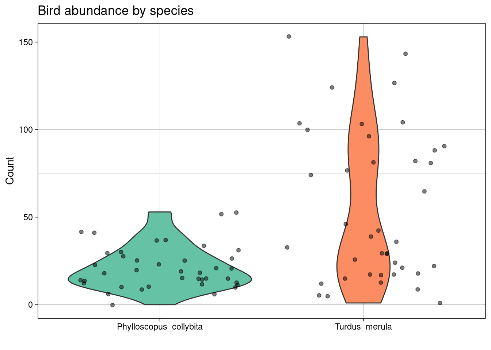
## Plotting Classical (Metric) Multidimensional Scaling
autoplot(cmdscale(eurodist, eig = TRUE))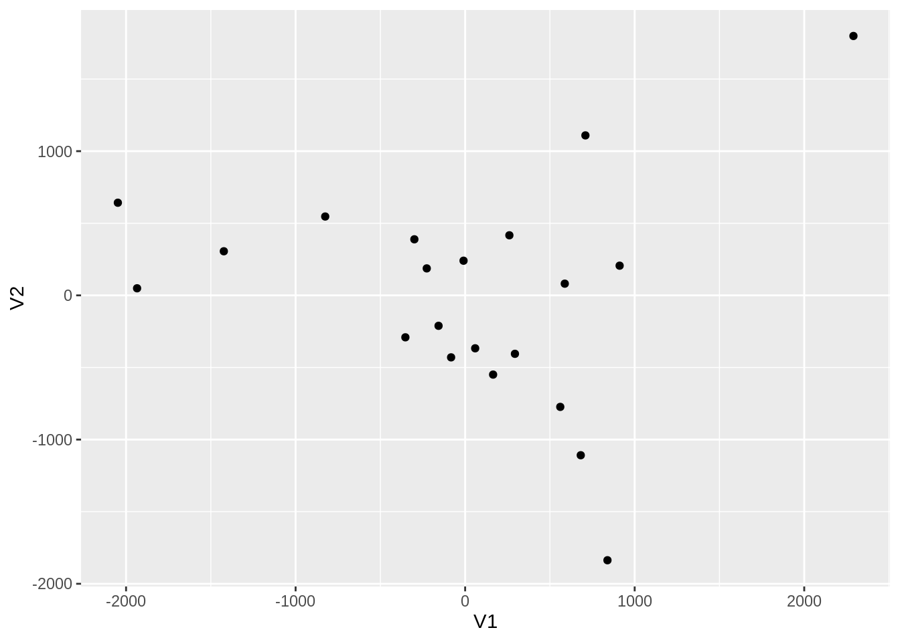
autoplot(cmdscale(eurodist, eig = TRUE), label = TRUE, shape = FALSE,
label.size = 3)
## Plotting Non-metric Multidimensional Scaling
## MASS::isoMDS and MASS::sammon perform Non-metric MDS
library(MASS)
autoplot(sammon(eurodist))## Initial stress : 0.01705
## stress after 10 iters: 0.00951, magic = 0.500
## stress after 20 iters: 0.00941, magic = 0.500
autoplot(sammon(eurodist), shape = FALSE, label = TRUE,label.size = 3)## Initial stress : 0.01705
## stress after 10 iters: 0.00951, magic = 0.500
## stress after 20 iters: 0.00941, magic = 0.500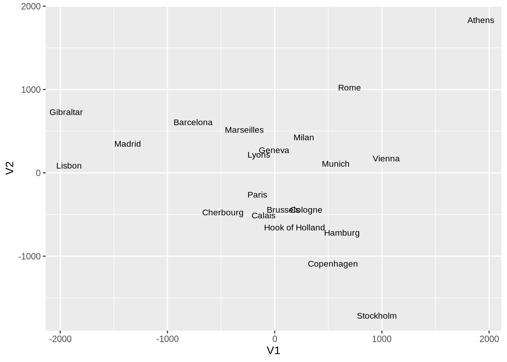
## Have a go at interpreting these plots based on the geography of the cities :-)